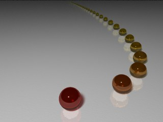

Formation POV #7: Programmation
Variables
#declare nom=valeur;
Si l’on tape la ligne ci-dessus dans un fichier .pov, on pourra ensuite taper nom là où POV attend un élément du type de valeur (nombre ou vecteur).
Cela permet de paramétrer des objets (longueur du bras d’un robot par exemple), mais aussi de faire des boucles.
Boucles
#while (condition)
…
#end
Le contenu de la boucle est répété tant que la condition est vérifiée.
Souvent on désire créer n objets pour lesquels on fait varier un paramètre ;
il suffit de déclarer un compteur :
#include "colors.inc"
#include "textures.inc"
#declare i=1;
#while (i<50)
sphere {<8*log(i),0,i*i/2>,1
texture {Orange_Glass pigment {color rgb<1,1-.8/i,0> filter .6}}
}
#declare i=i+1;
#end
plane {y,-1
pigment {White}
finish {ambient .2 reflection .4}
normal {bozo .02 scale .1}}
light_source {<-6,20,-12>, White area_light 5*x, 5*y, 5, 5}
camera {
location <0,8,-8>
look_at <2,0,8>
}

Attention : Une erreur courante est d’oublier d’incrémenter le compteur de la boucle.
Macros
#macro nom(param1,param2,…) contenu #end
Après la définition ci-dessus, si l’on tape nom(…), cela sera remplacé
par contenu, qui peut dépendre des paramètres de la macro. Par exemple :
#macro carre(i) (i)*(i) #end
Attention : Ne pas oublier les précautions d’usage relatives aux macros, notamment les parenthèses. Ainsi, si au lieu de (i)*(i) on avait mis i*i, alors carre(1+1) ne vaudrait pas 4, mais 1+1*1+1, soit 3.